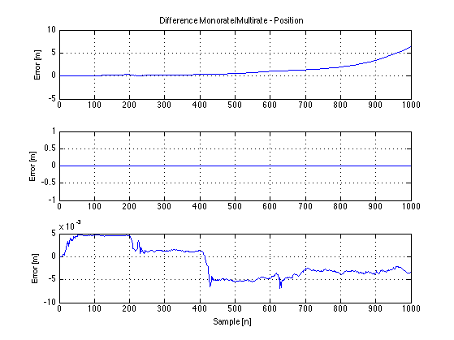

Contents
- Kalman Filter Implementation for AAUSHIP1:
- Number of Samples:
- System Parameters:
- System Definition:
- Noise Terms (Input and Measurement Noise):
- Covariance Matrices:
- System initiation:
- Running Computation of the Monorate Kalman filter:
- Output definitions:
- Plot of figures for same Monorate sampling:
- Running Computation of the Multirate Kalman filter::
- Output definitions - Multirate sampling:
- Plot - Multirate Sampling (x,y,w)
- Calculation differente between Monorate and Multirate
- Plot of the error between monorate and multirate:
- Estiamting a Wind Bias:
- Combined Kalman filter with test inputs:
Kalman Filter Implementation for AAUSHIP1:
Rasmus Christensen 26/11/2012 - 12gr730 - AAUSHIP Kalaman Filter (c)
clc; clear all; clf; load inputD.mat; % Loads system input file from contsimu.m inputD = inputD'; % To reduce the amount of noise on the measurements which are fed to the % system, and to enhance the precision of these, the data is run through a % Kalman filter which is then estiamtes the position, given the noisy % inputs. The HLI interface, which computes if the waypoint is reached, % needs the X and Y position for the vessel to verify wether the ship has % reached the desired waypoints. These two, can be measured by several % devices, first of, the GPS spits out the position of the vessel, as well % as the velocity. The velocity can be converted to a Y position, using the % inverse of the rotation matrix. Using the IMU on board the ship, we're % able to measure the acceleration in the X and Y direction. The IMU also % meausres the rotational acceleration around the center of the ship. % % Later, this can also be used to estimate the roll of the ship, to give % the precise position of the measurement taken, using simple geometry! % % First of, the state vector Y is defined as: % Y(n) = A(n) * Y(n-1) + Z(n), where W(n) is driving noise/input to the % system. % % Then the measuremen vector X can be defined as: % X(n) = H(n) * Y(n) + W(n), where Z(n) expresses the noisy measurements. % % The desired measurements can be described as (the definition of the A % matrix):
Number of Samples:
N = 1000;
System Parameters:
m = 12; % The ships mass I = (1/12)*m*(0.25*0.25+1.05*1.05); % The ships inertia ts = 0.1; % Sampling time betaX = 0.4462; betaY = 0.0784; betaW = 1.3;
System Definition:
Hn = [1 ts ts^2/2 0 0 0 0 0 0;... % The X position 0 1 ts 0 0 0 0 0 0;... % The X velocity 0 -betaX 0 0 0 0 0 0 0;... % The X acceleration is a sum of forward motion (F_forward - F_drag) 0 0 0 1 ts ts^2/2 0 0 0;... % The Y Position 0 0 0 0 1 ts 0 0 0;... % The Y Velocity 0 0 0 0 -betaY 0 0 0 0;... % The Y acceleration is a sum of the sideways motion (F_ymotion (wind?) - F_dragY) 0 0 0 0 0 0 1 ts ts^2/2;... % The angle 0 0 0 0 0 0 0 1 ts;... % The angular velocity 0 0 0 0 0 0 0 -betaW 0]; % The angular acceleration is a sum of the drag an induced torque! An = eye(9); % An eye matrix, as all the outputs scales equally - everything is in metric units!
Noise Terms (Input and Measurement Noise):
The Z(n) is the "driving noise" - as the system input is a forward force and a torque, these are input here as well. The "input" matrix for the driving noise Z(n) is then equal to:
Bn = [0 0;... 0 0;... 1/m 0;... % From force to input acceleration 0 0;... 0 0;... 0 0;... 0 0;... 0 0;... 0 1/I]; % From torque to angular acceleration for ii = 1:N Z(:,ii) = Bn*inputD(:,ii); end % W is the measurement noise on the system, this can be estimated to be % white gaussian noise, with zero mean (for most cases) and with a % variance, that are estimated in Appendix #XX. varXpos = 15; varXvel = .2; varXacc = 4.9451e-5; % m/s^2 or 5.045*10^-6 G varYpos = 16; varYvel = .2; varYacc = 4.8815e-5; % m/s^2; or 4.9801*10^-6 G varWpos = .2; varWvel = .2; varWacc = 2.3559e-5; % m/s^2 or 2.4035*10^-6 G varYWacc = 2.4496*10^-6; % rad/s^2 SqM = sqrt([varXpos varXvel varXacc varYpos varYvel varYacc varWpos varWvel varWacc]); % Random number at each iteration with a given variance.
Covariance Matrices:
As the vector Kalman filter have several system inputs, the noise added to the system generates a covariance matrix. These are computed below. The covariance of a vector is given as: cov(Z_i(n),Z_j(n)) = E[(Zi-mu_i)(Zj - mu_j)]. If the process is zero mean, this becomes a matrix with the diagonal entires given as: cov(Z(n) = E[Z(n)*Z(n)'], but as the inputs to the system, cannot be considered to be zero mean, the latter is not used. Qz = cov(Z(n-1)*Z(n)'); The measuremnets, are considered to be white gaussian zero mean noise, and this can then be considered to be a diagonal matrix with the elements squared, hence there is no need for the square root, as this just gives the variance it self.
System initiation:
The system is initialized, the parameters are:
Qz = zeros(9,9,N); Qw = zeros(9,9,N); Y = zeros(9,N); X = zeros(9,N); Ypred = zeros(9,N); Xpred = zeros(9,N); Rpred = zeros(9,9,N); B = zeros(9,9,N); Yupdate = zeros(9,N); Rupdate = zeros(9,9,N); k_newpos = zeros(2,N); y_newpos = zeros(2,N); x_newpos = zeros(2,N); k_rot = zeros(2,N);
Running Computation of the Monorate Kalman filter:
for n = 2:N; Wn(:,n) = randn(9,1).*SqM'; Qz(:,:,n) = cov(Z(:,n-1)*Z(:,n)'); Qw(:,:,n) = diag([varXpos varXvel varXacc varYpos varYvel varYacc varWpos varWvel varWacc]); Y(:,n) = Hn*Y(:,n-1)+Z(:,n); X(:,n) = An*Y(:,n)+Wn(:,n); Ypred(:,n) = Hn*Yupdate(:,n-1); Xpred(:,n) = An*Ypred(:,n); Rpred(:,:,n) = Hn*Rupdate(:,:,n-1)*Hn'+Qz(:,:,n); B(:,:,n) = (Rpred(:,:,n)*An')/(An*Rpred(:,:,n)*An'+Qw(:,:,n)); Yupdate(:,n) = Ypred(:,n)+B(:,:,n)*(X(:,n)-Xpred(:,n)); Rupdate(:,:,n) = (eye(9)-B(:,:,n)*An)*Rpred(:,:,n); % Below - rotation udpate, so the route can be plotted: k_rot(:,n) = [cos(Yupdate(7,n-1));sin(Yupdate(7,n-1))];%;sin(Yupdate(7,n)) cos(Yupdate(7,n))]; k_newpos(:,n) = k_newpos(:,n-1) + k_rot(:,n-1).*Yupdate(2,n-1).*ts;%.*(Yupdate(2,n-1)*ts)); y_rot(:,n) = [cos(Y(7,n-1));sin(Y(7,n-1))]; y_newpos(:,n) = y_newpos(:,n-1) + (y_rot(:,n).*Y(2,n-1).*ts); x_rot(:,n) = [cos(X(7,n-1));sin(X(7,n-1))]; x_newpos(:,n) = x_newpos(:,n-1) + (x_rot(:,n).*X(2,n-1).*ts); end
Output definitions:
Filtered:
Y_kal_pos_X = Yupdate(1,:)'; % Updated Y - x position Y_kal_vel_X = Yupdate(2,:)'; Y_kal_acc_X = Yupdate(3,:)'; Y_kal_pos_Y = Yupdate(4,:)'; % Updated Y - y position Y_kal_vel_Y = Yupdate(5,:)'; Y_kal_acc_Y = Yupdate(6,:)'; Y_kal_pos_W = Yupdate(7,:)'; % Updated Y - angle Y_kal_vel_W = Yupdate(8,:)'; Y_kal_acc_W = Yupdate(9,:)'; % Measured: X_pos_X = X(1,:)'; % Observation X - x position X_vel_X = X(2,:)'; X_acc_X = X(3,:)'; X_pos_Y = X(4,:)'; % Observation X - y position X_vel_Y = X(5,:)'; X_acc_Y = X(6,:)'; X_pos_W = X(7,:)'; % Observation X - angle X_vel_W = X(8,:)'; X_acc_W = X(9,:)'; % Actual: Y_pos_X = Y(1,:)'; % True Y - x position Y_vel_X = Y(2,:)'; Y_acc_X = Y(3,:)'; Y_pos_Y = Y(4,:)'; % True Y - x position Y_vel_Y = Y(5,:)'; Y_acc_Y = Y(6,:)'; Y_pos_W = Y(7,:)'; % True Y - x position Y_vel_W = Y(8,:)'; Y_acc_W = Y(9,:)';
Plot of figures for same Monorate sampling:
Plot of position (x,y,w)
h1 = figure(1); subplot(3,1,1) hold on plot(X_pos_X,'g+','MarkerSize',2); plot(Y_kal_pos_X,'b','LineWidth',1); plot(Y_pos_X,'m','LineWidth',1); hold off title('X-Position Estimation - Monorate') legend('Measured','Filtered','True') xlabel('Sample [n]') ;ylabel('Position [m]'); grid on subplot(3,1,2) hold on plot(X_pos_Y,'g+','MarkerSize',2); plot(Y_kal_pos_Y,'b','LineWidth',1); plot(Y_pos_Y,'m','LineWidth',1); hold off title('Y-Position Estimation - Monorate') legend('Measured','Filtered','True') xlabel('Sample [n]') ;ylabel('Position [m]'); grid on subplot(3,1,3) hold on plot(X_pos_W,'g+','MarkerSize',2); plot(Y_kal_pos_W,'b','LineWidth',1); plot(Y_pos_W,'m','LineWidth',1); hold off title('Angle Estimation - Monorate') legend('Measured','Filtered','True') xlabel('Sample [n]') ;ylabel('Angle [rad]'); grid on % Plot of velocity (x,y,w) h2 = figure(2); subplot(3,1,1) hold on plot(X_vel_X,'g+','MarkerSize',2); plot(Y_kal_vel_X,'b','LineWidth',1); plot(Y_vel_X,'m','LineWidth',1); hold off title('X-Velocity Estimation') legend('Measured','Filtered','True') xlabel('Sample [n]') ;ylabel('Velocity [m/s]'); grid on subplot(3,1,2) hold on plot(X_vel_Y,'g+','MarkerSize',2); plot(Y_kal_vel_Y,'b','LineWidth',1); plot(Y_vel_Y,'m','LineWidth',1); hold off title('Y-Velocity Estimation') legend('Measured','Filtered','True') xlabel('Sample [n]') ;ylabel('Velocity [m/s]'); grid on subplot(3,1,3) hold on plot(X_vel_W,'g+','MarkerSize',2); plot(Y_kal_vel_W,'b','LineWidth',1); plot(Y_vel_W,'m','LineWidth',1); hold off title('Angular Velocity Estimation') legend('Measured','Filtered','True') xlabel('Sample [n]') ;ylabel('Angular velocity [rad/s]'); grid on % Plot of acceleration (x,y,w) h3 = figure(3); subplot(3,1,1) hold on plot(X_acc_X,'g+','MarkerSize',2); plot(Y_kal_acc_X,'b','LineWidth',1); plot(Y_acc_X,'m','LineWidth',1); hold off title('X-Acceleration Estimation') legend('Measured','Filtered','True') xlabel('Sample [n]') ;ylabel('Acceleration [m/s^2]'); grid on subplot(3,1,2) hold on plot(X_acc_Y,'g+','MarkerSize',2); plot(Y_kal_acc_Y,'b','LineWidth',1); plot(Y_acc_Y,'m','LineWidth',1); hold off title('Y-Acceleration Estimation') legend('Measured','Filtered','True') xlabel('Sample [n]') ;ylabel('Acceleration [m/s^2]'); grid on subplot(3,1,3) hold on plot(X_acc_W,'g+','MarkerSize',2); plot(Y_kal_acc_W,'b','LineWidth',1); plot(Y_acc_W,'m','LineWidth',1); hold off title('Angular Acceleration Estimation') legend('Measured','Filtered','True') xlabel('Sample [n]') ;ylabel('Angular acceleration [rad/s]'); grid on % Plot of actual X-Y position h4 = figure(4); hold on plot(x_newpos(1,:),x_newpos(2,:),'g+','MarkerSize',2); plot(k_newpos(1,:),k_newpos(2,:),'b','LineWidth',1); plot(y_newpos(1,:),y_newpos(2,:),'m','LineWidth',1); hold off grid on axis equal


Running Computation of the Multirate Kalman filter::
As not all of the measurements are sampled at the same time (some are slower, as the GPS for instance) - the samples where no GPS reading is available will have to increase the level of the noise. Below is a list of the sampling speeds of the sensors mounted on the ship: GPS = 1Hz; IMU = 20Hz; This calls for attention to the GPS measurements, as these are not sampled as often as the IMU! When this is done, the computation of the Kalman filter becomes:
% Resetting the parameters: YD = zeros(9,N); XD = zeros(9,N); YpredD = zeros(9,N); XpredD = zeros(9,N); RpredD = zeros(9,9,N); BD = zeros(9,9,N); YupdateD = zeros(9,N); RupdateD = zeros(9,9,N); k_newposD = zeros(2,N); y_newposD = zeros(2,N); x_newposD = zeros(2,N); k_rotD = zeros(2,N); y_rotD = zeros(2,N); x_rotD = zeros(2,N); sC = 0; % Sample counter - used to only include the 10th GPS sample. for n = 2:N; %sC = isinteger(n/10) % Sensor Count, used to zero out unsampled system inputs. Wn(:,n) = randn(9,1).*SqM'; Qz(:,:,n) = cov(Z(:,n-1)*Z(:,n)'); Qw(:,:,n) = diag([varXpos varXvel varXacc varYpos varYvel varYacc varWpos varWvel varWacc]); YD(:,n) = Hn*YD(:,n-1)+Z(:,n); XD(:,n) = An*YD(:,n)+Wn(:,n); YpredD(:,n) = Hn*YupdateD(:,n-1); XpredD(:,n) = An*YpredD(:,n); RpredD(:,:,n) = Hn*RupdateD(:,:,n-1)*Hn'+Qz(:,:,n); BD(:,:,n) = (RpredD(:,:,n)*An')/(An*RpredD(:,:,n)*An'+Qw(:,:,n)); if sC ~= 10; BD(:,1,n) = zeros(9,1); BD(:,4,n) = zeros(9,1); else BD(:,:,n) = B(:,:,n); sC = 0; end YupdateD(:,n) = YpredD(:,n)+BD(:,:,n)*(XD(:,n)-XpredD(:,n)); RupdateD(:,:,n) = (eye(9)-BD(:,:,n)*An)*RpredD(:,:,n); sC = sC + 1; % Below - rotation udpate, so the route can be plotted: k_rotD(:,n) = [cos(YupdateD(7,n-1));sin(YupdateD(7,n-1))]; %;sin(Yupdate(7,n)) cos(Yupdate(7,n))]; k_newposD(:,n) = k_newposD(:,n-1) + k_rotD(:,n-1).*YupdateD(2,n-1).*ts; y_rotD(:,n) = [cos(YD(7,n-1));sin(YD(7,n-1))]; y_newposD(:,n) = y_newposD(:,n-1) + (y_rotD(:,n).*YD(2,n-1).*ts); x_rotD(:,n) = [cos(XD(7,n-1));sin(XD(7,n-1))]; x_newposD(:,n) = x_newposD(:,n-1) + (x_rotD(:,n).*XD(2,n-1).*ts); end
Output definitions - Multirate sampling:
Filtered:
Y_kal_pos_XD = YupdateD(1,:)'; % Updated Y - x position Y_kal_vel_XD = YupdateD(2,:)'; Y_kal_acc_XD = YupdateD(3,:)'; Y_kal_pos_YD = YupdateD(4,:)'; % Updated Y - y position Y_kal_vel_YD = YupdateD(5,:)'; Y_kal_acc_YD = YupdateD(6,:)'; Y_kal_pos_WD = YupdateD(7,:)'; % Updated Y - angle Y_kal_vel_WD = YupdateD(8,:)'; Y_kal_acc_WD = YupdateD(9,:)'; % Measured: X_pos_XD = XD(1,:)'; % Observation X - x position X_vel_XD = XD(2,:)'; X_acc_XD = XD(3,:)'; X_pos_YD = XD(4,:)'; % Observation X - y position X_vel_YD = XD(5,:)'; X_acc_YD = XD(6,:)'; X_pos_WD = XD(7,:)'; % Observation X - angle X_vel_WD = XD(8,:)'; X_acc_WD = XD(9,:)'; % Actual: Y_pos_XD = YD(1,:)'; % True Y - x position Y_vel_XD = YD(2,:)'; Y_acc_XD = YD(3,:)'; Y_pos_YD = YD(4,:)'; % True Y - x position Y_vel_YD = YD(5,:)'; Y_acc_YD = YD(6,:)'; Y_pos_WD = YD(7,:)'; % True Y - x position Y_vel_WD = YD(8,:)'; Y_acc_WD = YD(9,:)';
Plot - Multirate Sampling (x,y,w)
h5 = figure(5); subplot(3,1,1) hold on plot(X_pos_XD,'g+','MarkerSize',2); plot(Y_kal_pos_XD,'b','LineWidth',1); plot(Y_pos_XD,'m','LineWidth',1); hold off title('X-Position Estimation - Multirate') legend('Measured','Filtered','True') xlabel('Sample [n]') ;ylabel('Position [m]'); grid on subplot(3,1,2) hold on plot(X_pos_YD,'g+','MarkerSize',2); plot(Y_kal_pos_YD,'b','LineWidth',1); plot(Y_pos_YD,'m','LineWidth',1); hold off title('Y-Position Estimation - Multirate') legend('Measured','Filtered','True') xlabel('Sample [n]') ;ylabel('Position [m]'); grid on subplot(3,1,3) hold on plot(X_pos_WD,'g+','MarkerSize',2); plot(Y_kal_pos_WD,'b','LineWidth',1); plot(Y_pos_WD,'m','LineWidth',1); hold off title('Angle Estimation - Multirate') legend('Measured','Filtered','True') xlabel('Sample [n]') ;ylabel('Angle [rad]'); grid on % Plot of velocity (x,y,w) h6 = figure(6); subplot(3,1,1) hold on plot(X_vel_XD,'g+','MarkerSize',2); plot(Y_kal_vel_XD,'b','LineWidth',1); plot(Y_vel_XD,'m','LineWidth',1); hold off title('X-Velocity Estimation - Multirate') legend('Measured','Filtered','True') xlabel('Sample [n]') ;ylabel('Velocity [m/s]'); grid on subplot(3,1,2) hold on plot(X_vel_YD,'g+','MarkerSize',2); plot(Y_kal_vel_YD,'b','LineWidth',1); plot(Y_vel_YD,'m','LineWidth',1); hold off title('Y-Velocity Estimation - Multirate') legend('Measured','Filtered','True') xlabel('Sample [n]') ;ylabel('Velocity [m/s]'); grid on subplot(3,1,3) hold on plot(X_vel_WD,'g+','MarkerSize',2); plot(Y_kal_vel_WD,'b','LineWidth',1); plot(Y_vel_WD,'m','LineWidth',1); hold off title('Angular Velocity Estimation - Multirate') legend('Measured','Filtered','True') xlabel('Sample [n]') ;ylabel('Angular velocity [rad/s]'); grid on % Plot of acceleration (x,y,w) h7 = figure(7); subplot(3,1,1) hold on plot(X_acc_XD,'g+','MarkerSize',2); plot(Y_kal_acc_XD,'b','LineWidth',1); plot(Y_acc_XD,'m','LineWidth',1); hold off title('X-Acceleration Estimation - Multirate') legend('Measured','Filtered','True') xlabel('Sample [n]') ;ylabel('Acceleration [m/s^2]'); grid on subplot(3,1,2) hold on plot(X_acc_YD,'g+','MarkerSize',2); plot(Y_kal_acc_YD,'b','LineWidth',1); plot(Y_acc_YD,'m','LineWidth',1); hold off title('Y-Acceleration Estimation - Multirate') legend('Measured','Filtered','True') xlabel('Sample [n]') ;ylabel('Acceleration [m/s^2]'); grid on subplot(3,1,3) hold on plot(X_acc_WD,'g+','MarkerSize',2); plot(Y_kal_acc_WD,'b','LineWidth',1); plot(Y_acc_WD,'m','LineWidth',1); hold off title('Angular Acceleration Estimation - Multirate') legend('Measured','Filtered','True') xlabel('Sample [n]') ;ylabel('Angular acceleration [rad/s]'); grid on % Plot of actual X-Y position h8 = figure(8); hold on plot(x_newposD(1,:),x_newposD(2,:),'g+','MarkerSize',2); plot(k_newposD(1,:),k_newposD(2,:),'b','LineWidth',1); plot(y_newposD(1,:),y_newposD(2,:),'m','LineWidth',1); hold off grid on axis equal


Calculation differente between Monorate and Multirate
The difference in X-position:
diffX_pos = Y_kal_pos_X - Y_kal_pos_XD; % The difference in Y-position: diffY_pos = Y_kal_pos_Y - Y_kal_pos_YD; % The difference in W-position: diffW_pos = Y_kal_pos_W - Y_kal_pos_WD; % The difference in X-velocity: diffX_vel = Y_kal_vel_X - Y_kal_vel_XD; % The difference in Y-velocity: diffY_vel = Y_kal_vel_Y - Y_kal_vel_YD; % The difference in W-velocity: diffW_vel = Y_kal_vel_W - Y_kal_vel_WD; % The difference in X-acceleration: diffX_acc = Y_kal_acc_X - Y_kal_acc_XD; % The difference in Y-acceleration: diffY_acc = Y_kal_acc_Y - Y_kal_acc_YD; % The difference in W-acceleration: diffW_acc = Y_kal_acc_W - Y_kal_acc_WD;
Plot of the error between monorate and multirate:
Position
h9 = figure(9); subplot(3,1,1) plot(diffX_pos,'b'); title('Difference Monorate/Multirate - Position') grid on ylabel('Error [m]'); subplot(3,1,2) plot(diffY_pos,'b'); grid on ylabel('Error [m]'); subplot(3,1,3) plot(diffW_pos,'b'); grid on ylabel('Error [m]'); xlabel('Sample [n]'); hold off grid on % Velocity h10 = figure(10); subplot(3,1,1) plot(diffX_vel,'b'); title('Difference Monorate/Multirate - Velocity') grid on ylabel('Error [m/s]'); subplot(3,1,2) plot(diffY_vel,'b'); grid on ylabel('Error [m/s]'); subplot(3,1,3) plot(diffW_vel,'b'); ylabel('Error [m/s]'); xlabel('Sample [n]'); hold off grid on % Acceleration h11 = figure(11); subplot(3,1,1) plot(diffX_vel,'b'); title('Difference Monorate/Multirate - Acceleration') grid on ylabel('Error [m/s^2]'); subplot(3,1,2) plot(diffY_vel,'b'); grid on ylabel('Error [m/s^2]'); subplot(3,1,3) plot(diffW_vel,'b'); ylabel('Error [m/s^2]'); xlabel('Sample [n]'); hold off grid on

Estiamting a Wind Bias:
As Wind might push the ship out of course (constantly in the same direction) this can be considered a bias to the system. This is then to be subtracted, so the system only computes on the actual data, rather than the wind-biased data.
Combined Kalman filter with test inputs:
Below is a simulation of a walk around the parking lot, with the IMU and the GPS used as reference for the ship (no bias, as the ship doesn't drift when running on wheels!).